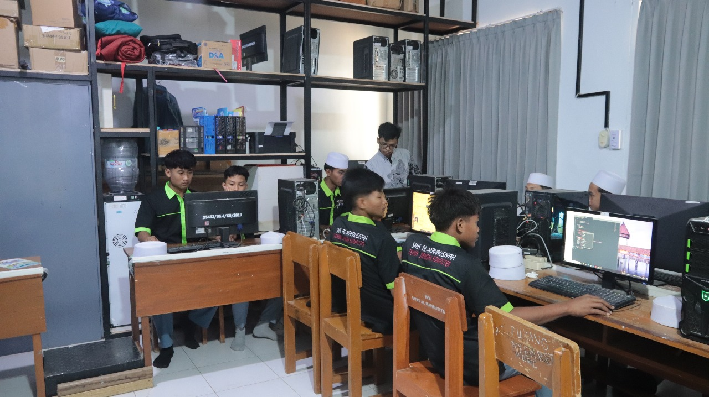

Fasilitas Lab TKJ

Lab Jaringan Cisco & Mikrotik

Server Room & Virtualization

Ruang Praktik 30+ Unit PC
Mencetak Tenaga Ahli IT Siap Kerja & Siap Wirausaha
Jurusan Teknik Komputer dan Jaringan SMK Al-Mahrusiyah berdiri sejak tahun 2012. Hingga tahun 2025 telah meluluskan banyak alumni yang langsung bekerja atau berwirausaha di bidang IT.
Mengembangkan Potensi Siswa dan Siswi Dalam Mewujudkan Daya Cita dan Cipta Berbasis Teknologi.
Ketua Jurusan TKJ
Cisco CCNP | Mikrotik MTCINE
Guru Produktif Jaringan
Mikrotik Certified Trainer
Guru Pemrograman Web
Full-Stack Developer